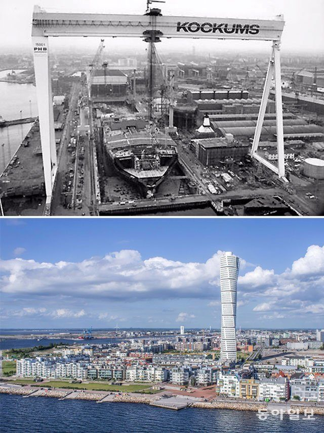
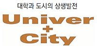

등록일 2018-05-03
조선업의 쇠퇴로 파산 직전까지 몰렸던 스웨덴의 말뫼시는 대학의 연구 역량을 활용하는 전략을 통해 첨단 도시로 부활했다.
계 최대 골리앗을 보유했던 조선소 자리(위쪽)에는 말뫼대와 54층의 ‘터닝 토르소’ 빌딩이 세워졌다. 동아일보DB
미국 아이오와주 동부에 있는 인구 12만여 명의 작은 도시 시더래피즈(Cedar Rapids)는 2001∼2010년 미국 북동부 지역에서 가장 높은 국내총생산(GDP) 성장률을 기록했다. 실업률은 미국 평균보다 낮다. 다양한 농업 관련 산업이 발달했던 이 도시는 농업경제가 침체되면서 위기를 맞았었다. 그러나 시(市)가 대학과 힘을 합쳐 전기·전자 스타트업을 육성하면서 새로운 전기를 맞았다.
이 도시 출신의 존 립스키 전 국제통화기금(IMF) 총재권한대행은 “제조업이 항공전자공학 분야 정도밖에 없는 도시에 전기·전자 분야 스타트업들이 새로운 일자리들을 만들어냈다”며 “이런 변화와 혁신은 지역대학인 커크우드대가 평생교육 시스템을 통해 맞춤형 교육을 실시한 덕분에 가능했다”고 말했다.
이처럼 지방자치단체가 지역 대학과 힘을 합쳐 도시를 부활시키는 ‘유니버+시티’는 외국에서 대표적인 성공 모델로 평가받는다.
○ 발전의 원천은 대학
우리나라 조선업의 침체와 함께 ‘말뫼의 눈물’로 국내 언론의 집중 조명을 받았던 스웨덴 말뫼시가 부활을 위해 가장 먼저 한 것은 대학 유치였다.
세계 최대 크레인을 보유하고 있던 말뫼시의 코쿰스 조선소는 한국의 조선업에 밀려 1986년 문을 닫았다. 당시 조선소에서 해고된 실업자가 말뫼시 인구의 10%에 이르면서 말뫼시의 실업률은 22%까지 치솟았다. 1994년 말뫼시장에 오른 일마르 레팔루 시장은 대학교수, 기업인, 노조, 주지사, 시장 등으로 위원회를 조직해 도시 부활을 위한 끝장토론의 자리를 마련했다. 6개월에 걸친 토론 끝에 내려진 결론은 바이오, 정보기술(IT), 재생에너지 산업에 집중하고, 이를 뒷받침할 수 있는 인력과 기술을 위해 조선소 자리에 대학을 유치하는 것이었다.
그렇게 해서 1998년 코쿰스 조선소 자리에 세워진 것이 말뫼대학이다. 말뫼대는 시 예산 50%와 기업 등의 투자기금 50%로 설립된 창업보육센터인 미디어에볼루션시티의 젖줄로서 신산업 육성에 주도적인 역할을 하고 있다. 또 의학·바이오·IT 분야 기업들의 유럽 본사가 옮겨오면서 첨단산업 도시로 부활한 말뫼시에 자리 잡은 글로벌 기업의 연구 인력 거점이 됐다. 2013년 물러난 레팔루 전 시장은 “재임 중 나의 가장 큰 업적은 최첨단 기술대학을 유치한 것이다”라고 말했다.
관련기사
“4차 산업혁명시대, 지역산업 경쟁력은 우리가 키운다”
○ 기존 대학 활용해 부활 성공
미국 오하이오주 애크런시는 1960년대까지 세계 최대의 타이어 생산도시로 ‘고무 도시’로 불렸다. 그러나 미국 자동차 산업의 쇠퇴는 애크런시 타이어 공장들의 폐업과 매각, 이전을 가져왔다. 1986년부터 2015년까지 재임하며 애크런시를 위기에서 구해낸 돈 플러스켈릭 전 시장은 먼저 폐점 뒤 방치돼 있던 폴스키 백화점 건물에 새로운 대학 강의실과 학교 시설을 넣고, 2007년 퀘이커스퀘어 호텔을 사들여 기숙사로 바꿨다. 덕분에 공동화(空洞化)되던 도심은 젊은 학생들의 이주로 활력을 되찾았다.
애크런대도 지역 내 최대 타이어 기업인 굿이어와 손을 잡고 타이어 산업에 활용되는 폴리머(고분자화합물) 기술을 연구하는 폴리머트레이닝센터를 세웠다. 학자 120명과 대학원생 700명이 연구하고 있는 이 센터는 세계 최초의 폴리머연구소로 인정받으며 애크런시의 새로운 성장동력으로 폴리머 산업의 성장을 이끌었다.
세계적 철강회사 US스틸이 노후 공장을 폐쇄하면서 도시가 급속도로 쇠퇴하게 된 미국의 피츠버그시도 도시 재생을 위해 지역 대학의 힘을 빌렸다. 카네기멜런대와 피츠버그대가 보유한 컴퓨터공학이나 로봇, 생명공학 기술을 활용하기 위해 이들 대학을 중심으로 서부 펜실베이니아 첨단기술센터, 첨단기술 협의회 등을 설립해 연구개발, 창업지원, 교육훈련을 지원했다. 또 제조업을 스마트 팩토리로 바꿔 나가는 첨단제조 클러스터, 카네기멜런대의 IT를 바탕으로 하는 IT 클러스터, 피츠버그대의 병원을 중심으로 하는 생명과학 클러스터를 조성했다. 덕분에 피츠버그시는 철강도시에서 첨단 산업도시로의 변신에 성공하며 이전의 영광을 되찾았다.
‘유니버+시티’의 외국 사례 등을 연구하고 있는 박태준미래전략연구소의 정기준 교수는 “도시를 지탱해 온 산업이 붕괴되고 있는 도시에서 부활을 위한 유일한 자원은 대학”이라며 “특히 4차 산업혁명 시대에 도시들은 인공지능, 바이오산업 등의 원천 지식을 비축하고 끊임없이 새 지식을 창출하는 지역 대학의 역량을 적극 활용해야 한다”고 말했다.
○ 대학이 배출한 인재가 ‘자원’
미국 노스캐롤라이나주는 1950년대까지만 해도 담배, 섬유 산업을 기반으로 하는 낙후지역으로 미국의 50개 주 중에서 1인당 국민소득이 최하위였다. 지역 발전을 위해 활용할 수 있는 자원도 없었던 주 정부는 지역 대학의 고급 인재들에게 눈을 돌렸다. 대학 졸업 후 일자리를 찾아 다른 지역으로 빠져나가는 고급 인력을 붙잡아 발전을 위한 자원으로 활용하는 전략을 세운 것이다. 북미 최대의 과학기술단지로 미국 동부의 실리콘 밸리로 불리는 리서치 트라이앵글은 바로 그런 전략에서 만들어졌다.
노스캐롤라이나주립대, 듀크대, 노스캐롤라이나대를 연결한 삼각형의 중심에 건설된 단지에는 IBM, 시스코, 바이엘을 포함한 첨단 IT 기업과 글로벌 제약회사의 연구센터 등 200개 가까운 연구기관이 입주해 있다. 이곳에 근무하는 인원만 4만여 명이다.
일본 요코하마시도 지역 대학의 인재 유출을 막기 위해 2005년 ‘대학-도시 파트너십 협의회’를 설립했다. 요코하마의 30개 대학과 민간 기업들이 참여하고 있는 협의회의 의장은 시장이 맡고 있으며 요코하마시는 대학과의 소통을 위해 대학조정국을 설치해 놓고 있다. 협의회에서 속한 대학 총장과 기업의 대표들은 매년 한 차례 회의를 통해 주요 정책을 결정한다.
[출처]
이현두 기자
ruchi@donga.com
, [동아일보]
조선소 자리에 대학 유치… 스웨덴 말뫼시, 첨단산업 도시로 부활
_ 2018-04-20


